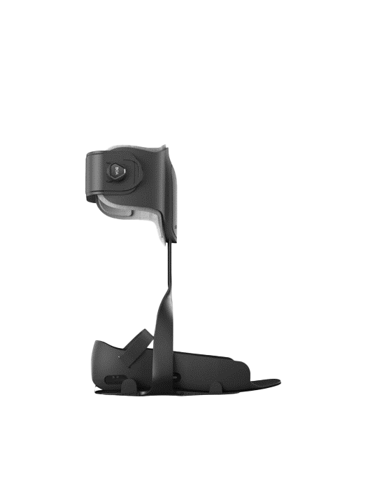
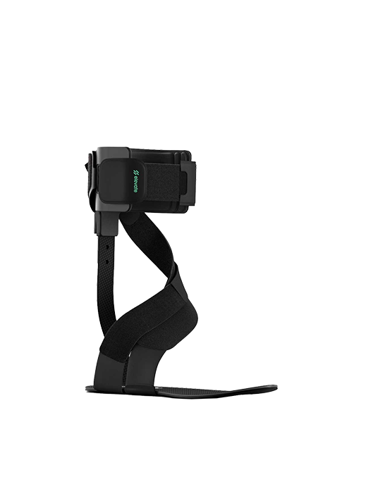
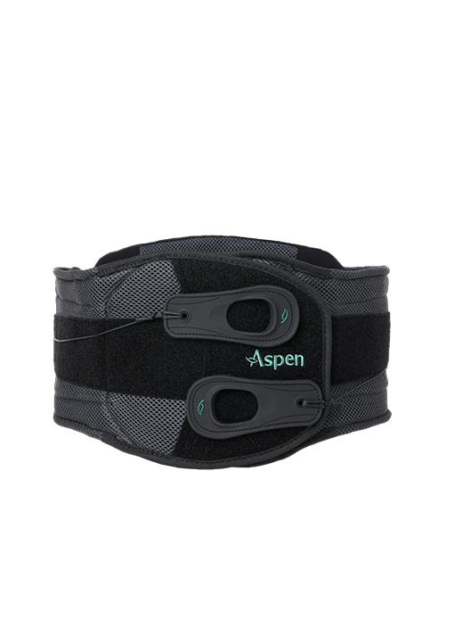
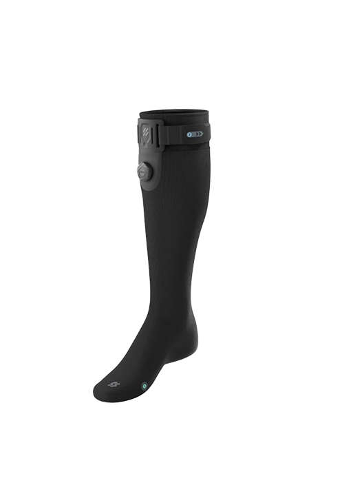
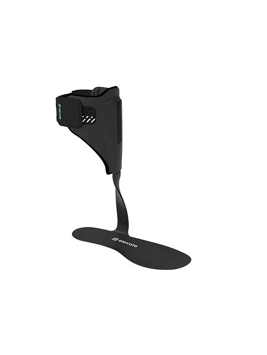
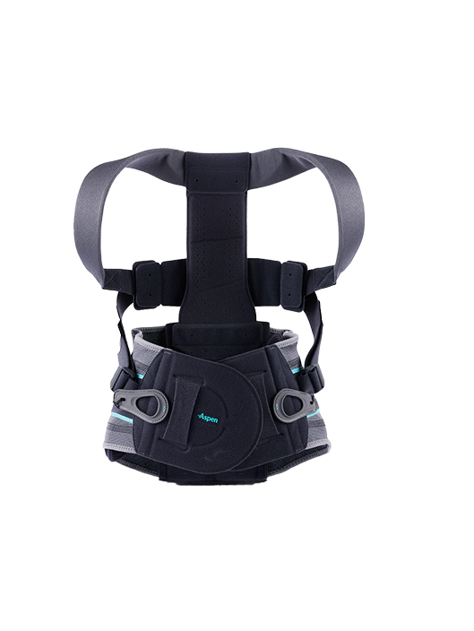
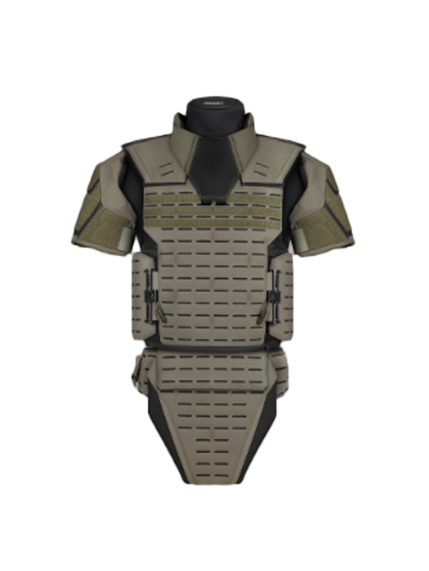
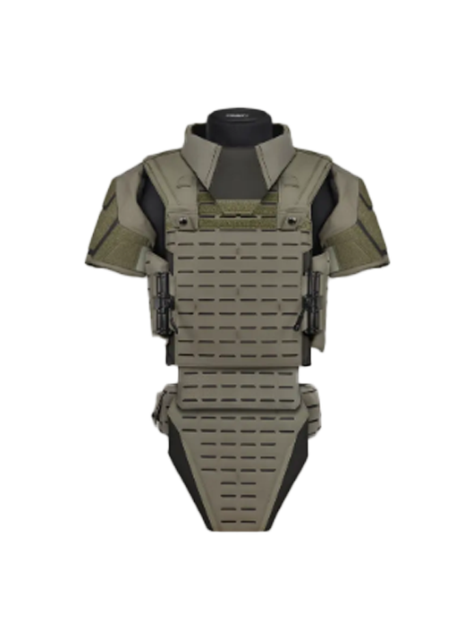

Softgoods · Manufacturing · Design for Assembly
Built to perform,
made to last.
Twelve years bringing softgoods from concept to production — spanning tactical gear, medical orthotics, aerospace interiors, and consumer products. Six patents. Dozens of successful production launches.
5+
Patents held
12yr
Industry experience
4
Industries
30+
Production launches
Foot and ankle

Foot and ankle

Lumbar brace

Lumbar brace

Knee brace

Knee brace

Foot and ankle

Foot and ankle

Lumbar brace

Hip

Backpack · Bold Top-Load Backpack

Backpack · Athena Small Duffle

Backpack · Talos Rolltop Backpack

Backpack · Axis Duffle

Backpack · Sparrow Messenger Bag

Tactical · SEV

Tactical · SPR

Tactical · ILB-AP